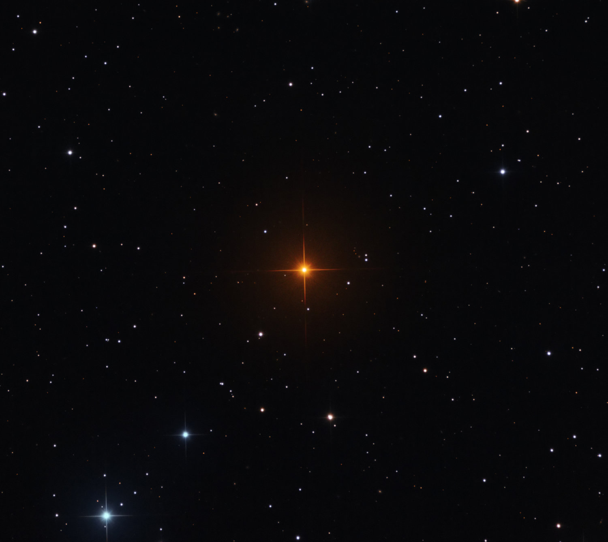

IMAGE: R Leporis | IMAGE CREDIT: Martin Pugh
Dusty's Log Entry:
- Type: asymptotic giant branch star
- Temperature: about 2,500 - 3,500 K
- Mass: about 0.5 - 8 Suns
- Lifespan: a few million years in this stage
- What's Next: planetary nebulae, then white dwarf
AGB star or an asymptotic giant branch, is the last phase of giant stars. Helium and hydrogen burn in separate shells around a core of carbon and oxygen. This star becomes huge, luminous, and unstable as it pulses in size. The outer layers of this star is blown into space in the form of carbon, nitrogen, and other elements. This dust later becomes part of new stars, planets, and even people.
Examples of the AGB Star includes Mira and R Leporis.